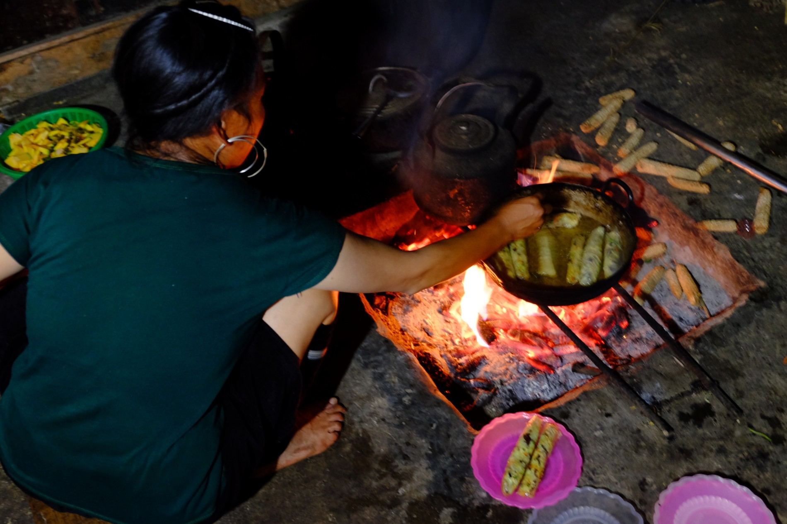
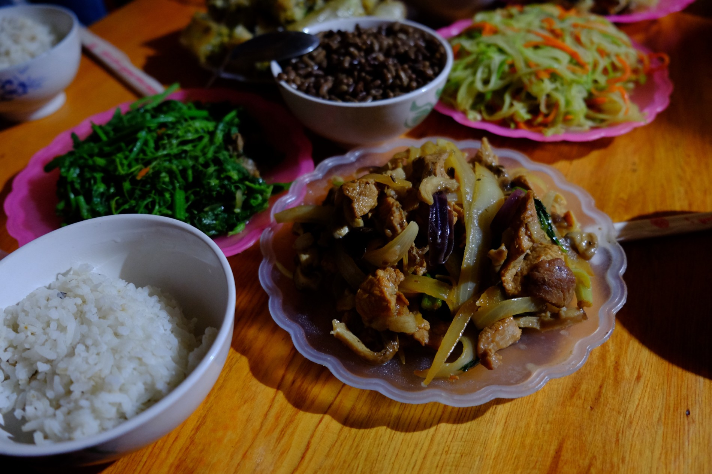
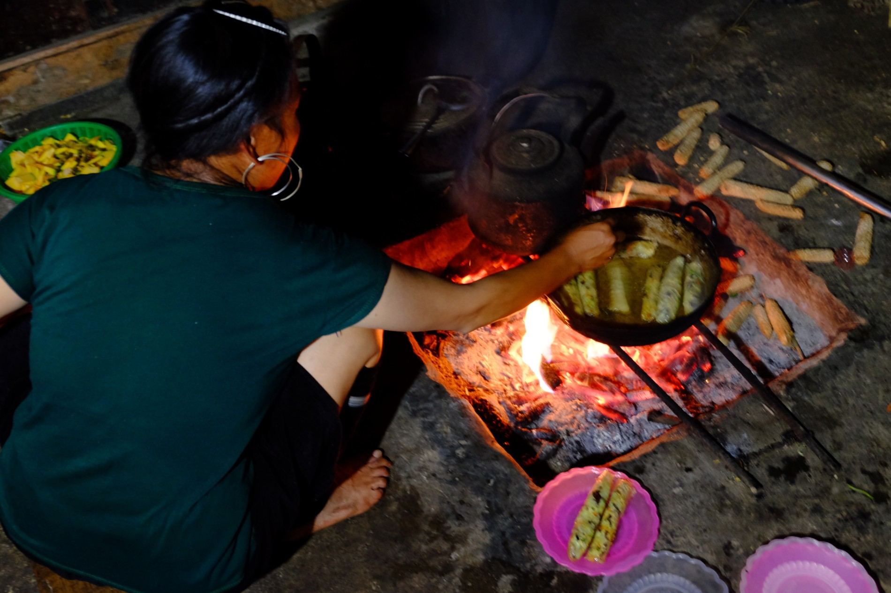
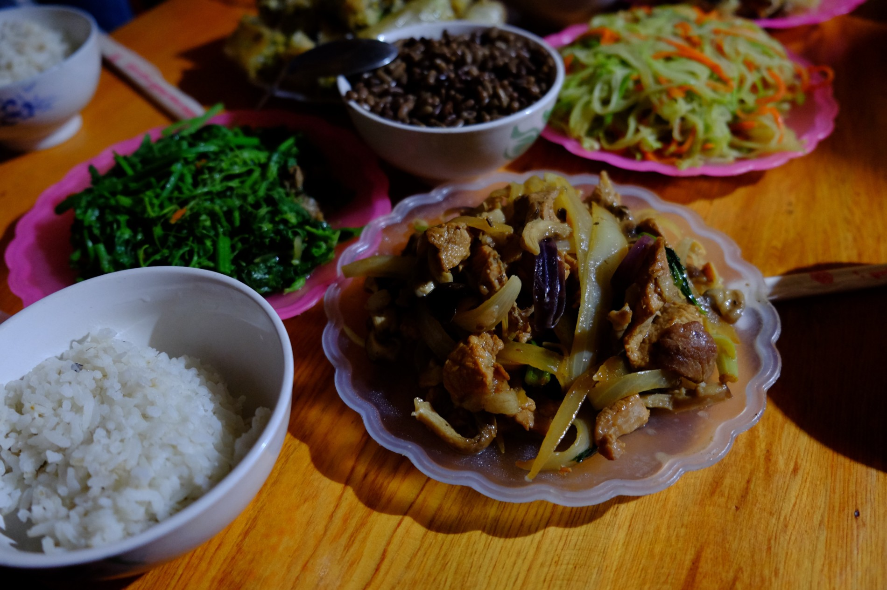

Hurá. Konečně se nám povedlo vyrazit tak, jak jsme si naplánovali. V osum ráno odjezd 游뗵 čekalo nás cca 150km s cílovou destinací Sapa. Dopoledne ještě nebyl takovej pařák a cesta tak příjemně utíkala. 캛칤m více jsme se bl칤쬴li k Sapě, tím více jsem cenil svojí dnešní v칳stroj. Poprv칠 jsem si na motorku obl칠kl kalhoty a bylo to moc fajn. V horách je zima. Kdo by to by řekl? 游뗵

Cestou jsme potkali Love Waterfall. Konečně pořádnej vodopád i s padající vodou. Po všech těch vyschlinách příjemná změna.


Ihned po příjezdu do Sapy nás začali nahánět hustleři do sv칳ch ubytování. Jedna pani nás dokonce dojela na motorce a zastavila, aby nám mohla sdělit nabídku sv칠ho čist칠ho hostelu. Zrovna ale náhodou přímo tam, kde jsme zastavili, stála další paní, která taky měla moc zajímavou nabídku. A to homestay u ní v hmongsk칠 rodině. S jídlem a malou procházkou. A musíte uznat, taková nabídka se přece neodmítá 游뗵 nejvíce nás přesvědčil její not칳sek, kter칳 ihned vytáhla. Byl pln칳 recenzí od předchozích návštěvníků. Takov칳 offline tripadvisor. Nebo taky návštěvní kniha. A zafungovalo to na nás v칳borně. Obsahoval spoustu příspěvků s naprosto nadšen칳m hodnocením. Navíc ka쬯칳 příspěvek byl psan칳 jin칳m písmem a dost dobrou angličtinou, tak jsme usoudili, 쬰 to nejsp칤코 bude prav칳, 쬰 by si to pani nenafejkovala :-)Dali jsme si s ní sraz v pět hodin u kostela, proto쬰 po pát칠 hodině přestávají vybírat vstup 75kč do 칰dolí, kde všichni tyhle původní kmeny bydlí. Pani měla svůj mototaxi a my jí následovali do jejího příbytku, proto쬰 jinak bychom to v 쬴votě nenašli. Z centra Sapy to bylo asi 7km. Nejhorší cesta m칠ho 쬴vota. Silnici v tak špatn칠m stavu si nedovedete ani představit. Já, Lenka a cca 30kg bag치쬰. Dost se divim, 쬰 to ta motorka pře쬴la. Lenka několikrát musela po sv칳ch, proto쬰 cesta byla moc hrbolatá a nebo strmá pro dva lidi. Posledních 10minut cesty jsme šli po sv칳ch oba, proto쬰 k paní domů se motorkou ani dostat nedá 游뗵
Ka쬯opádně cestou jsme potkali spoustu moc krásn칳ch panorámat, akorát jsme pronásledujíce pani neměli čas stavět a fotit, tak쬰 se t캩코te na zítra 游땔
Přivítala nás vařenou kukuřicí. Později jsme si ještě pochutnali na smazenych závitkach, masem s r칳쮂, vařenou d칳ní, zelí a mo쬹치 jsem ještě na něco zapomněl. A všechno delikátní 游뗵

 

Kromě nás tam prenocovali ještě dva Vietnamci, jedna 맗anělka a Angličan. Po večeři jsme ka쬯칳 vyfasovali panáka a začala se rozl칠vat r칳쬺v칠 víno. Hodně siln칠 r칳쬺v칠 víno 游뗵 nutili nás zpívat, ale přece jenom toho vína bylo jenom 1,5l, tak쬰 se nám s Lenkou povedlo ubránit. Ka쬯칳 jsme ještě jako dárek dostali ručně dělanou Hmong kabelku a náramek. Ta kabelka se mi určitě bude moc hodit 游
{kind=link}
{kind=link}

Dobrou noc opět na super tvrd칠 matraci. Co tu všichni maj s těma tvrdejma matracema? Jakoby ten 쬴vot neměli u tak dost t캩쬶ej…